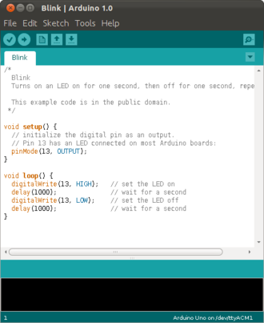

Arduino
After these introductory chapters, we are now ready to do some physical computing [1]. We will use an Arduino board and connect it with the different electronic components we learned about in the previous chapters.
.
Hardware
The first Arduino was introduced in 2005. Since then it has become extremely popular with hobbyists all over the world. The main reason being its ease of use, price and support. The simplest one is the Arduino Uno. We will be using the Arduino MKR1000 [2], which has a few very nice additional features. Besides those, there are many other Arduinos available.
.
MKR1000 Board Specifications
The MKR1000 has the following features:
- regular USB (5V) can act as power supply (VIN)
- operating voltage is 3.3V
- it has 8 digital I/O pins
- it has 12 PWM pins (0,1,2,3,4,5,6,7,8,10,A3 or 18,A4 or 19)
- it has 7 analog input pins (ADC 8/10/12 bit)
- it has one analog output pin (DAC 10 bit)
- the build in LED is at pin 6
- it supports Wi-Fi
Its CPU is a 32-bit ARM CPU running at 48 MHz. It has 32 KB of SRAM and 256 KB of flash memory.
To keep our Arduino healthy, we need to be aware of two things: the voltage applied to any pins should always be less than 3.3V and the current we draw from any of the I/O pins must be less than 7 mA. If we keep these limits than our Arduino will be fine. If not, it will be dead.
A very good reference into the foundations of Arduino hardware and software is reference [4]. It is a very good idea to printout reference [3], the pinout of the MKR1000.
.
Software and IDE
To program the Arduino, we need a computer. That can be a Windows PC, Mac or Linux computer. All the computer needs is a USB port. Arduino comes with software to program it, the Arduino IDE [3]. It is very easy to install and use. Basically, the Arduino uses the C programming language, but to us it will almost look like Java.
Any Arduino program starts in the setup() method. This method is called only once, at the start of the program.
void setup() { // executed only once at start } void loop() { // executed repeatedly }
After the setup, the loop() method is called. It is called again and again, until you turn of the Arduino or upload a new program.
Before you can run your programs, you need to compile them. This is done either through the menu (Sketch->Verify/Compile), a shortcut (Ctrl-R) or a button. If the compiler is happy with your code, you can upload it to your Arduino. This can be done through the menu (Sketch->Upload), a shortcut (Ctrl-U) or a button. Once a program is uploaded to the Arduino, it will start executing immediately. You can only run one program at a time.
The IDE comes with really many examples, you can find them under File->Examples.
.
Serial
The Arduino board can send messages to our PC via the serial port. With serial port we mean the USB port. For this you need to setup a serial connection in the setup() method,
void setup() {
Serial.begin(9600);
}
void loop() {
Serial.println("Hello from your Arduino");
delay(1000);
}
And then use the Serial.println() method to print to the Serial Monitor. The Serial Monitor (Ctrl-Shift-M) is part of the IDE. It shows us the messages that come from the Arduino board.
The communication is two way, meaning we can also send messages from the Serial Monitor to the Arduino. Again, we need to setup a serial connection in the setup() method,
void setup() {
Serial.begin(9600);
}
void loop() {
if (Serial.available() > 0) {
char c = Serial.read();
Serial.println(c);
}
}
Then in the loop() method, we wait for incoming characters. If one is available, then we can read it. We can only read one character at a time. Strings are quite different in C as compared to Java [5].
.
Digital I/O
Our Arduino has a whole bunch of digital pins (0,1,2,3,4,5,6,7,8,10) We can write to and read from them. First, we must specify, if we want to use a pin as input or output pin. We do this in the setup using the pinMode() method. We specify the pin (here it is pin 6) and whether to use it as INPUT or OUTPUT:
int ledPin = 6;
void setup() {
pinMode(ledPin, OUTPUT);
}
void loop() {
digitalWrite(ledPin, HIGH);
delay(1500);
digitalWrite(ledPin, LOW);
delay(500);
}
Once we specified that, we can use the digitalWrite() method to write to that pin. A digital pin can have two states, either LOW, which is 0 volts, or HIGH, which for our Arduino is 3.3 volts. Interesting enough, there is an internal LED connected to pin 6, so when running the above program that LED should blink.
Reading works completely analoguous. You must declare the pin as INPUT pin using the pinMode() method,
int ledPin = 6;
int inPin = 0;
void setup() {
pinMode(ledPin, OUTPUT);
pinMode(inPin, INPUT);
}
void loop() {
int val = digitalRead(inPin);
digitalWrite(ledPin, val);
}
and then use the digitalRead() method to read from that pin.
.
Analog I/O
In addition to digital I/O, there is also analog I/O. All Arduinos can read analog voltages using the analogRead() method. Again, we first need to say that we want to use a pin as INPUT or OUPUT. Then we need to specifiy the resolution of the converter, using the analogReadResolution() method. Here 8 stands for 8-bit, resulting in values between 0 and 255. We can also use 10-bit or 12-bit resolutions.
void setup() {
Serial.begin(9600);
pinMode(A1, INPUT);
analogReadResolution(8);
}
void loop() {
Serial.println( analogRead(A1) );
delay(2);
}
You can see the readings either in the Serial Monitor, or if it is numbers, then you can also use the Serial Plotter (Ctrl-Shift-L), to visualize the data in a graph. Arduino uses an analog to digital converter, also called ADC, to do the conversion from input voltages to digital numbers. Our Arduino has seven analog input pins (A0-A6). The two millisecond delay gives the ADC a little time. It is not the fastest.
Some Arduinos also have analog output pins. Our Arduino (MKR1000) has one, the DAC0 pin. On that pin we can create arbitrary output voltages, between 0 and 3.3 volts in our case. To do this, it uses a digital to analog converter, called DAC. It is on pin A0 for the MKR1000. We do need to specify its resolution, which for the MKR1000 can only be 8-bit or 10-bit. However, for some strange reason, we should not set the pin as output pin, but rather not specify it at all.
int val = 0;
void setup() {
Serial.begin(9600);
pinMode(A1, INPUT);
analogReadResolution(8);
// do not do this: pinMode(A0, OUTPUT);
analogWriteResolution(8);
}
void loop() {
val += 1;
val %= 256;
analogWrite(A0, val);
Serial.println(analogRead(A1));
delay(2);
}
This means, we can actually use our Arduino to generate arbitrary wave forms, i.e. become a function generator.
.
PWM
Another form of analog output is Pulse Width Modulation (PWM). In PWM we do not modulate the voltage. The voltage is either 0 or 3.3 volts. But we generate a square wave, where we modulate the width of the pulse. If you average that, it then looks almost like an analog voltage. PWM is available on all Arduinos, even if they do not have a DAC.
int val = 0;
void setup() {
Serial.begin(9600);
pinMode(A2, OUTPUT);
}
void loop() {
val += 1;
val %= 256;
analogWrite(A2, val);
delay(2);
}
The value can be any value between 0 and 255.
.
Review
In this chapter we introduced the Arduino physical computing platform. Among the many different kinds of Arduinos, we focused on the MKR1000, mostly because it comes in such a beautiful box. We had a brief introduction to the Arduino IDE and how to write simple Arduino software scetches with it. In the ensuing examples we saw how to communicate between Arduino and PC, how to use the digital and analog inputs and outputs, and what PWM stands for. We have now enough knowledge under our belts to become really dangerous!
.
Labs
Today we will use our Arduino for the first time. We learn how to connect it to our laptop, install the required software, upload and execute programs on the Arduino, and how to connnect different electronic components such as diodes, LEDs and transistors to it. Many of the examples here are inspired from Programming in Arduino [3].
Before you can start with any of the experiments in this chapter, you need to install the Arduino IDE first, see the appendix for details.
.
Preparations
Before attempting to perform any of the experiments in this lab, you need to have done the following preparations beforehand. You have to be able to
- bring your laptop, and ideally have installed the Arduino IDE on it [6],
- you have read the Arduino MKR1000 FAQ [7],
- know about static electricity, and
- why you should not connect the Arduino directly to your laptop, but always connect it using a USB hub.
.
Note to Instructors
Equipment: Arduino box, bipolar transistor BC547.
Exp. 11: High likelihood that Arduino is dead after this experiment.
.
Before you Start
Equipment: Arduino box.
Although quite robust, the Arduino has to be handeled carefully. Try to avoid any static electricty. When not needed, put the Arduino back on its conductive foam and inside its anti-static bag. The image on the side shows the Arduino on its conductive foam (black).
Before using the Arduino, remove the conductive foam that protects the pins and place it on the breadboard. Do this very carefully, and make sure not to bend any of its legs. If you have difficulty, ask your instructor to help you.
Connect the Arduino through the USB hub with your computer. There has been irrepairable damage to laptops, so to avoid that use a hub.
The Arduino is powered through the USB hub. So before building circuits, disconnect your Arduino from the USB hub. Before connecting it, please let an instructor check your circuit.
Make sure you understand the different voltages on the Arduino board, Vin, 5V and VCC:
- Vin: This pin can be used to power the board with a 5 volts source. WE WILL NOT USE THIS.
- 5V: This pin outputs 5 volts powered from the USB connector. WE SHOULD NEVER USE THIS.
- VCC: This pin outputs 3.3V through the on-board voltage regulator.
You should always use VCC, i.e., the 3.3 volts. Connecting any of the pins to 5 volts (or more) will destroy your Ardunio. Not a good thing.
.
Preparing the IDE
Equipment: Laptop, Arduino box.
After installation of the IDE, you need to select the proper Arduino board. There are many Arduinos, we are using the MKR1000. So under Tools->Board select the proper board.
Also make sure you selected the correct serial or USB port your Arduino is connected to. On Mac and Linux everything should work out of the box. On Windows you most likely have to install a driver, follow the instructions in [9].
.
.
.
1. Blink
Getting the LED "L" to blink is actually quite easy: simply type the following code into the Arduino Software (or load the "Blink" scetch from File>Examples>Basics). Verify it (Ctrl-R) and Upload it (Ctrl-U) to the Arduino board. The LED should start blinking [10].
int ledPin = 6;
void setup() {
pinMode(ledPin, OUTPUT);
}
void loop() {
digitalWrite(ledPin, HIGH);
delay(1500);
digitalWrite(ledPin, LOW);
delay(500);
}
.
 2. Blink and Serial
2. Blink and Serial
In this scetch we learn how the Arduino board can send messages to our PC via the USB serial port.
int ledPin = 6;
void setup() {
Serial.begin(9600);
pinMode(ledPin, OUTPUT);
}
void loop() {
digitalWrite(ledPin, HIGH);
Serial.println("LED is ON");
delay(1500);
digitalWrite(ledPin, LOW);
Serial.println("LED is OFF");
delay(500);
}
The LED should blink again, but if we look at the Serial Monitor (Ctrl-Shift-M), we see messages that come from the Arduino board.
.
3. Serial-2-Way
We can also use the Serial Monitor to send commands or strings to the Arduino via the serial port.
int ledPin = 6;
void setup() {
Serial.begin(9600);
pinMode(ledPin, OUTPUT);
Serial.println("Greetings from your Arduino!");
}
void loop() {
if (Serial.available() > 0) {
char incomingMessage = Serial.read();
if (incomingMessage == 'H') {
digitalWrite(ledPin, HIGH);
} else if (incomingMessage == 'L') {
digitalWrite(ledPin, LOW);
}
}
}
Run the above program, open the Serial Monitor, type an 'H' in the text field, and click on the "Send" button. The LED on the Arduino should turn on. If you send the 'L' command, the LED should switch off.
.
4. Button and Tilt Switch
To read the state of a button we use the digitalRead() method. We connect the button to the digital pin 2.
void setup() {
Serial.begin(9600);
pinMode(2, INPUT);
}
void loop() {
int switchState = digitalRead(2);
if (switchState == LOW) {
Serial.println("Button is OFF");
} else {
Serial.println("Button is ON");
}
delay(500);
}
The program checks the value of the digital pin 2, and prints the state of the button to the Serial Monitor (Ctrl-Shift-M).
Instead of the button, you may also use the tilt switch that comes with the Arduino box.
You can also modify the program such that the LED on the board goes on, if the button is pressed and off otherwise [11,12].
.
5. Potentiometer
Next, let us read analog input from the analog pin A1. For this we need to connect a potentiometer to the Arduino in the way shown in the figure to the right.
void setup() {
Serial.begin(9600);
pinMode(A1, INPUT);
analogReadResolution(8);
}
void loop() {
Serial.println(analogRead(A1));
delay(2);
}
To visualize the data being read, we can use the Serial Plotter (Ctrl-Shift-L). The method analogRead() converts the voltage applied to pin A1 to a value between 0 and 1023 [14,15].
.
6. LDR
A photo sensor or light dependend resistors (LDR) will change its resistance depending on the amount of incident light.
void setup() {
Serial.begin(9600);
pinMode(A1, INPUT);
}
void loop() {
int sensorValue = analogRead(A1);
delay(5);
Serial.print("Raw Sensor Value \t .");
Serial.print(sensorValue);
}
Here we also see, how to output sensor values to the Serial Monitor in a nicely looking way [16,17].
.
7. Temperature
We can use the analog input together with out temperature sensor to measure temperature [18,19].
void setup() {
Serial.begin(9600);
pinMode(A1, INPUT);
}
void loop() {
int sensorVal = analogRead(A1);
delay(5);
Serial.print("Raw Sensor Value: ");
Serial.print(sensorVal);
// convert raw ADC value to voltage
float voltage = (sensorVal / 1024.0) * 3.3;
Serial.print(", Volts: ");
Serial.print(voltage);
// sensor changes 10 mV per degree C
// the datasheet says
// temp = ((voltage - 500mV) times 100)
Serial.print(", Degrees C: ");
float temperature = (voltage - 0.5) * 100;
Serial.println(temperature);
}
.
8. PWM
We can use Pulse Width Modulation (PWM) to change the brightness of an LED.
const int greenLEDPin = 2;
int greenValue = 0;
void setup() {
pinMode(greenLEDPin, OUTPUT);
}
void loop() {
greenValue++;
greenValue %= 256;
analogWrite(greenLEDPin, greenValue);
delay(20);
}
The green LED should get brighter until its brightness goes down to zero. The period should be about 5 seconds [13].
.
9. Melody
To see an example where we use the digital pin as output, look at the built-In axamples 02.Digital > toneMelody. You first need to connect an 8-ohm speaker to GND and digital pin 2.
#include "pitches.h"
const int tonePin = 2;
int melody[] = {
NOTE_C4, NOTE_G3, NOTE_G3, NOTE_A3, NOTE_G3, 0, NOTE_B3, NOTE_C4
};
// note durations: 4 = quarter note, 8 = eighth note, etc.:
int noteDurations[] = {
4, 8, 8, 4, 4, 4, 4, 4
};
void setup() {
// iterate over the notes of the melody:
for (int thisNote = 0; thisNote < 8; thisNote++) {
// to calculate the note duration, take one second divided by the note type.
//e.g. quarter note = 1000 / 4, eighth note = 1000/8, etc.
int noteDuration = 1000 / noteDurations[thisNote];
tone(tonePin, melody[thisNote], noteDuration);
// to distinguish the notes, set a minimum time between them.
// the note's duration + 30% seems to work well:
int pauseBetweenNotes = noteDuration * 1.30;
delay(pauseBetweenNotes);
// stop the tone playing:
noTone(tonePin);
}
}
void loop() {
// no need to repeat the melody.
}
This example also teaches how to use arrays with the Arduino. Try adding a capacitor between the D2 output of the Arduino and the input of the speaker [20-22].
.
10. ServoMotor
As an example for an actuator, let us consider the ServoMotor example. You need to connect the servo in the way indicated to the right. The orange cable (yellow in the diagram) should be connected to digital pin 2. The brown cable should be connected to GND, the red cable to +3.3V.
Executing the following code, will result in the servo turning slowly form 0 to 180 degrees.
#include <Servo.h> Servo myServo; void setup() { myServo.attach(2); // attach servo to pin 2 Serial.begin(9600); } void loop() { for (int angle = 0; angle < 180; angle++) { Serial.println(angle); myServo.write(angle); delay(15); } }
If you open the Serial Monitor, you can see the current angle the servo is set to.
This example also teaches how to import libraries and how to use an object [23].
.
Challenges
1. Motor
Running a motor requires a little more current than our Arduino can deliver. We have to use a transistor.
const int motorPin = 8;
void setup() {
Serial.begin(9600);
pinMode(motorPin, OUTPUT);
}
void loop() {
if (Serial.available() > 0) {
char incomingMessage = Serial.read();
if (incomingMessage == 'H') {
digitalWrite(motorPin, HIGH);
} else if (incomingMessage == 'L') {
digitalWrite(motorPin, LOW);
}
}
}
You can use the Serial Monitor to control the motor.
NOTE: BE VERY CAREFUL WHEN BUILDING THIS CIRCUIT. IT IS VERY LIKELY THAT YOUR ARDUINO WILL BE DEAD IF YOU GET SOMETHING WRONG!
We can also use a FET. The tricky part here is, that for the FET to switch, it needs a little more than 4 volts. But our Arduino only gives 3.3 volts. So what do we do? One solution is to use another bipolar transistor [26], but that is kind of stupid, because then we can drive the motor with the bipolar, no need for the FET.
But we can use a voltage divider! If you look at the schematic to the right, then we use the 4.7kOhm and 1kOhm resistors as a voltage divider, We then connect the middle of that divider to the ground (GND) pin of the Arduino. That has the effect, that the 1.6 volts of the voltage divider is added to the 3.3 volts of the Arduino pin, hence shifting us above the 4 volts needed to switch the FET [24-28].
Idea: may want to add a diode and/or a capacitor?
.
2. Function Generator
Using the analog output pin A0 and the DAC, we can write a little function generator that might come in handy when investigating AC voltages and currents.
const int step = 10;
int outputValue = 0;
void setup() {
Serial.begin(9600);
// do not do this: pinMode(A0, OUTPUT);
analogWriteResolution(8);
}
void loop() {
outputValue += step;
outputValue %= 256;
analogWrite(A0, outputValue);
Serial.print("X: "); Serial.print(outputValue); Serial.print(" ");
Serial.println("uT");
delay(10); // 256 ms = 1/4 Hz
}
Use a real oscilloscope, connect it to GND and pin A0 to see the output. Change the frequency and the waveform generated.
We can also generate sound this way, we just need to make sure it generates frequencies in the audible spectrum. And we may need to amplify them with a transistor and a 9 volt battery. And use speakers of a smartphone headset [29-30].
.
3. Software Oscilloscope
Experiment 5, the potentiometer can also be used as a software oscilloscope. Try to estimate its time resolution. Use one Arduino as a function generator, and another as a software oscilloscope.
.
4. Pressure Sensor
Just to get you thinking, take a look at reference [31]. It basically describes how to turn the antistatic foam that protects your Arduino from static electricity into a pressure sensor [32,33].
.
5. LCD Display
If you are interested in using the LCD display that comes with the Arduino box, check out reference [34].
.
6. Other Projects
Now you basically know how the Arduino works. There are many cool projects you can do now [35]. However, you should be aware of the fact, that most projects on the internet assume your Arduino uses 5 volts. Since ours does not, you should first learn about level shifting [36]. Also, there are many sensor kits, with easy to use sensors, check out references [37-39]. And once in a while there are other projects you find on the internet [40].
.
Questions
-
What does a digital-to-analog converter (DAC) do?
- Normally the input pins of an Arduino can be connected to 5 volts. Applies this also for the MKR1000, the Arduino we used?
.
References
You should read a little about the history of the Arduino, it is quite interesting, especially considering the revolution (IoT) it has caused.
[1] What Is Physical Computing?, https://itp.nyu.edu/physcomp/
[2] Arduino MKR1000, https://store.arduino.cc/arduino-mkr1000-wifi-with-headers-mounted
[3] MKR1000 Pinout, https://www.arduino.cc/en/uploads/Main/MKR1000_pinout.png
[4] Foundations, https://www.arduino.cc/en/Tutorial/Foundations
[5] string, https://www.arduino.cc/reference/tr/language/variables/data-types/string/
[6] Download the Arduino IDE, https://www.arduino.cc/en/main/software
[7] FAQ - READ THIS, thread in the MKR1000 section of the Arduino forum: https://forum.arduino.cc/index.php?topic=449441.0
[8] Programming in Arduino, https://programminginarduino.wordpress.com/author/programminginarduino/
[9] Getting started with the Arduino MKR1000, https://www.arduino.cc/en/Guide/MKR1000
[10] Blink, https://www.arduino.cc/en/Tutorial/Blink
[11] Project 02: Spaceship Interface, https://programminginarduino.wordpress.com/2016/02/29/project-2/
[12] Project 08: Digital Hourglass, https://programminginarduino.wordpress.com/2016/03/03/project-08-digital-hourglass/
[13] Project 04: Mixing color lamp, https://programminginarduino.wordpress.com/2016/03/01/project-04/
[14] AD Wandler, https://www.arduino.cc/en/Tutorial/ReadAnalogVoltage
[15] Serial Plotter tool, http://randomnerdtutorials.com/arduino-serial-plotter-new-tool/
[16] Project 04: Mixing color lamp, https://programminginarduino.wordpress.com/2016/03/01/project-04/
[17] Project 06: Light Theremin, https://programminginarduino.wordpress.com/2016/03/02/project-06/
[18] Project 03: Love-o-meter, https://programminginarduino.wordpress.com/2016/02/29/projecte-3/
[19] Using a Temp Sensor, https://learn.adafruit.com/tmp36-temperature-sensor/using-a-temp-sensor
[20] Play a Melody using the tone() function, https://www.arduino.cc/en/Tutorial/toneMelody
[21] Project 06: Light Theremin, https://programminginarduino.wordpress.com/2016/03/02/project-06/
[22] Project 07: Piano (musical keyboard), https://programminginarduino.wordpress.com/2016/03/02/project-07/
[23] Project 05: Mood Cue, https://programminginarduino.wordpress.com/2016/03/01/project-05/
[24] Project 09: Motorized Pinwheel, https://programminginarduino.wordpress.com/2016/03/04/project-10-2/
[25] Driving motors: Darlingtons and MOSFETs, https://vimeo.com/107917397
[26] Big Loads with MKR1000, https://create.arduino.cc/projecthub/Arduino_Genuino/big-loads-with-mkr1000-eee4cc
[27] Project 10: Zoetrope, https://programminginarduino.wordpress.com/2016/03/05/project-11/
[28] Robot Brains, https://www.instructables.com/lesson/Robot-Brains/
[29] Capacitance Meter and RC Time Constants, https://www.arduino.cc/en/Tutorial/CapacitanceMeter
[30] DIY Waveform Generator using Arduino​, https://circuitdigest.com/microcontroller-projects/arduino-waveform-generator
[31] Pressure sensor with antistatic foam, wiki.lvl1.org/Pressure_sensor_with_antistatic_foam
[32] Force Sensor (FSR), iainmccurdy.org/diy/forcesensorfoam/forcesensorfoam.html
[33] Force Sensitive Resistor Hookup Guide, https://learn.sparkfun.com/tutorials/force-sensitive-resistor-hookup-guide
[34] Project 11: Crystal Ball, https://programminginarduino.wordpress.com/2016/03/05/project-12/
[35] Programming in Arduino, https://programminginarduino.wordpress.com/author/programminginarduino/
[36] Level Shifting, https://itp.nyu.edu/physcomp/lessons/electronics/level-shifting/
[37] StarterKit_BasicKit/, https://github.com/arduino/Arduino/tree/master/build/shared/examples/10.StarterKit_BasicKit
[38] 001310302-an-01-en-ARDUINO_MEGA2560_R3_STARTER_KIT.pdf
[39] More sensors are described in 001359118-an-01-de-KURZ_ALLNET_4DUINO_SENSOR_KIT_37_IN_1.pdf
[40] Feinstaubsensor, https://luftdaten.info/feinstaubsensor-bauen/
{kind=link}
.